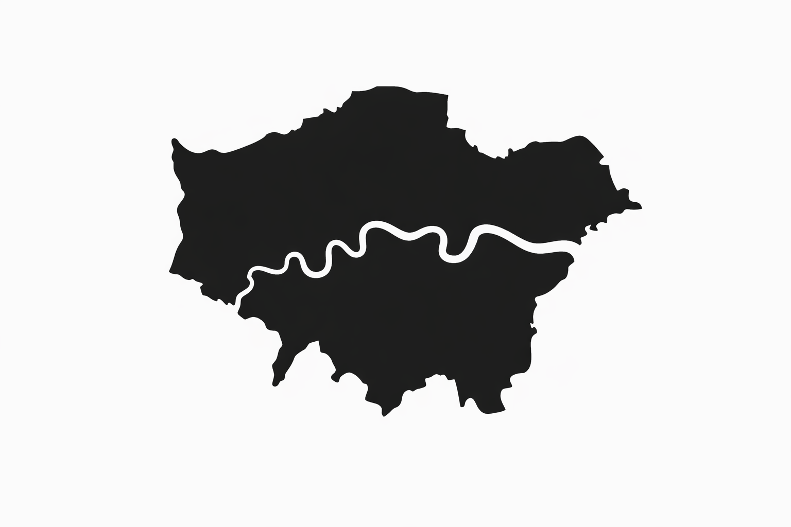

THE LONDON BIBLE
Loading…
The London Bible
One city, every layer.
Layers
Metrics
Insights
Legend
THE LONDON BIBLE
One city, every layer.
Views
HEXES
BOROUGHS
TUBE
ONLY-TUBE
Bikes
POIs
Schools
Hospitals
Coffee
Nightlife
Culture
Sport
Landmarks
A
P
S
Hexes style
Flat map
Spikes
↺ Reset
Metrics
Pubs density scope
Borough
MSOA
Density scope
Borough
MSOA
Time
Origin focus
Analysis
Compare boroughs
Why here?
Similar areas
Correlation
Stories
→
Residents per km²
sparse
dense
London avg · 0 res/km²
Tube lines
Analysis
Close